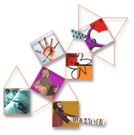

|
The
Three Pomegranates portal Our
Plans
Armenian
learning is not just learning Armenian. And it can be very
different for different people. At first glance, the high
school student in Yerevan has different needs than his peers
in Boston or Cyprus. A parent in Glendale looking for a good
short story in Armenian for his preteen daughter may seem to
have very little in common with the Saturday school teacher
in London trying to give students an appreciation of a
language they don't quite speak. And then there's the mother
of three in Anchorage, Alaska, wondering where to start.

But
all of these people have some important things in common:
They
are motivated by learning in the
context of a shared cultural heritage.
They
could really use each-others' help in
that effort (although some may not
know it.)
They
all have access to the Web (yes, the
student in Armenia too - see our 3PN
project.)
They
all live in a modern, increasingly global
and fast-paced world where time and
attention spans are valuable
commodities.
It's
time to have all of us start sharing resources and talking to
each other. We're building a space where Armenian learning is
tailored to people's needs. We believe that it can actually be
fun and natural, like playing a great game, reading a mystery
novel or chatting with friends from across the world.
The
Portal Idea
The
Three Pomegranates Portal is a Web site that will gradually
grow to meet the needs of parents, teachers and students,
individually and collectively. It's a site containing dynamic
resources, interactive tools and ongoing activities in both
English and Armenian. It is not for profit, although it can
certainly become self-sustaining as it evolves. And it will
be based on some basic principles: Targeted content and
high-quality design; inclusive of as many different varieties
of people interested in Armenian learning as possible, of
different ages and in different locations, and reflecting the
real-life challenges of real people in a fast moving world.
A
portal is not - should not be - just a set of links to other
sites and resources. The Three Pomegranates Portal will be a
gateway to a community of learners and educators. It will not
be about technology, but through technology it will put you in
touch with the day-to-day experiences of your peers.
Some
Examples
Here
are examples of the kinds of content that the Three
Pomegranates Portal will offer. Some of these are things we
experimented with and fine-tuned over the last several years.
Others are brand new ideas, addressing needs that have been
around for a while.
Collaborative
projects involving young participants from all over the
world. The Identity Game project is one that has worked very
well for us. It is structured in the form of a contest where
groups of participants have to work together to guess other
groups' hometowns based on multimedia clues that they upload
to the site.
Armenian
history modules
unlike any others in the history of Armenians, such as: A
glimpse into the historic context of the city of Ani,
structured around an interactive map of architectural
landmarks. Or a self-paced, audiovisual overview that can go
at century-a-minute speeds, or slow down to dig into details.
Games
for learning language, geography, and beyond. An
introduction to the Armenian alphabet in which kids get to
catch butterfly-letters on the computer screen. A spelling
tutor based on a new version of the game of hangman. A game of
darts with a map of the world as the target. Action, movement,
fun, learning.
Tools
for teachers and educators in general. Such as lesson
plans containing guides, resources and suggestions on specific
topics. Scheduling and communication tools that schoolteachers
can use to coordinate and keep in touch with students and
their parents, as well as home schooling resources of all
kinds.
Learning
resources,
including illustrated stories, arts and crafts projects,
useful databases like the one we compiled on Armenian schools
in various countries, commented links to sites where you can
find more…
As
we develop some of this content, our approach will rely
heavily on creating prototypes. We will build a preliminary
version, put it up on the Three Pomegranates portal and get
your feedback to make sure we are not headed in the wrong
direction. We do know, however that we want our content and
our site to be:
- Contemporary and fresh in its look and feel
- Personalized for each regular user
- Dynamic, interactive and smart
- In line with real life priorities and current
thinking on education
Funding
Who
is going to pay for all this? We all are. Here are some
sources of funding we will rely on:
1.
Commerce - Our
work has allowed us to have access to a network of very
creative people. Artists, artisans and designers who produce
items you would be interested in buying, but can't find in a
store near you, or on the Web for that matter. We will package
them and sell them to people who not only love a good product,
but realize the importance of having all the proceeds go to
the cause of education and development.
2.
Grants - From international
organizations and Armenian institutions who share our
perspective.
3.
Subscription fees - possibly from
individuals and schools, for access to specialized sections of
the site, or customized online services.
4.
Events, mailings, and other traditional methods -
that we will try to make a little less
traditional and more creative.
Although
we have revenue goals, we are not absolutely certain how much
funding we will be able to attract over the next year or two.
So we are making sure that the Three Pomegranates portal can
grow gradually, keeping pace with the growth of funding. That
way we can ensure continuity and stability, but just as
importantly, we will know that we are building what people
need.
Your
Input
We
want it. We will actively solicit your feedback on what works
and what doesn't, what you need, and any great ideas that you
may have. Starting now, at feedback@3noor.org.
|